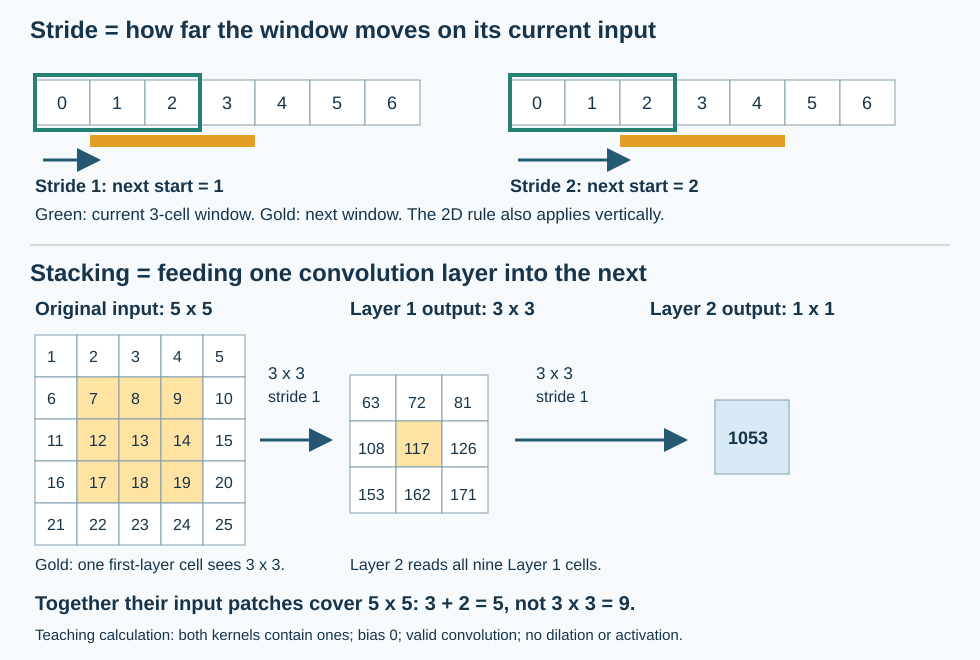

COSMOSAI / CNN WITH NUMBERS
Understand the CNN, then calculate it yourself
Small revision exercises: sliding filters, channels, output sizes, pooling and parameter counts. Calculations run in your browser; this page does not train a model.
Where does this appear in our project?
RGB (3 channels) → Conv2d (4 filters, 3×3, padding 1, stride 1) → ReLU → global average per map → Flatten → Linear (4 classes).
For a 3×3 image: [1,3,3,3] → [1,4,3,3] → [1,4,1,1] → [1,4] → [1,4]. The order is batch, channels, height, width (NCHW); each convolution map contains 9 responses.
Convolution: 4×(3×3×3+1) = 112 parameters. Classifier: 4×4+4 = 20. Total: 132. ReLU, pooling and Flatten add no trainable parameters. Four maps do not automatically mean four classes: the final layer determines the classes.
Inspect the saved Replay weights · Follow the loss and prediction · Our RGB convolution calculation
This is the tiny galaxy teaching CNN. Drone-image classification is a separate planned direction; this page does not demonstrate a trained drone model.
1. Slide a filter and inspect one response
Cross-correlation: multiply matching elements, sum across all input channels, then add the bias once. We do not flip the kernel. CNN libraries commonly call this operation convolution.
This is not ordinary row-by-column matrix multiplication. Pair matching patch and kernel positions, multiply element by element, then add every product. For channel 0: [[0,1],[1,2]] ⊙ [[0,1],[1,2]] = [[0,1],[1,4]]; sum = 6. Channel 1 contributes 18; together they give 24 before bias.
Why “kernel channel”? Each input channel has a matching slice of one filter's weights. One RGB 3×3 filter has three slices: red, green and blue, giving 27 weights plus one bias. The small integer weights below were chosen by hand for arithmetic practice. In our actual model, convolution and classifier weights start from seeded random initialisation and are then adjusted during training.
Click an output cell or use Step. Coordinates start at zero.
These are hand-chosen teaching values with two channels. Replay separately shows the RGB model's saved values. Pooling here aggregates the entire displayed map; it is not local 2×2 max pooling.
2. Output size and trainable parameters
Hout = floor((H + 2P − K) / S) + 1; use the same rule for W. Parameters = Cout × (K² × Cin + 1), including biases. Here: square kernels, symmetric padding, dilation=1, groups=1.
A larger stride skips positions. Round down, not up. Do not multiply the parameter count by the number of output positions: the weights are shared.
What does “stacking stride-one convolutions” mean?
Stride 1 means move the window one cell at a time on the current layer's input: starts 0, 1, 2, … . With stride 2, starts are 0, 2, 4, … . In 2D the rule applies horizontally and vertically.
Stacking means put layers one after another: image → convolution 1 → convolution 2. Layer 2 reads Layer 1's response maps, not the raw image again. Each layer has its own weights; within a layer those weights are reused at all positions.

For this numerical illustration, both filters contain ones and biases are zero: the centre Layer 1 response is 117; summing its nine displayed responses gives Layer 2's 1053. These are synthetic calculations, not model weights or predictions.
For stride 1: 3×3 → 5×5 → 7×7 is the region of the original input that can affect one response, not the output-map size. No dilation. The diagram uses valid convolution away from padded boundaries. Our tiny Replay model has only one convolution; this stacked example explains a possible deeper architecture.
3. Concepts behind the calculations
- Locality and shared weights
- Each output looks at a small patch. The same filter is reused at other positions: one detector, many responses. This avoids a separate set of weights for every image location.
- Kernel / filter and feature map
- A filter combines all input channels and produces one response map. A map cell is an activation, not a new learned weight. In our CNN, each filter has 27 weights and one bias.
- Receptive field
- The input region that can influence one output. Two consecutive 3×3 layers with stride 1 cover 5×5; three cover 7×7. “Consecutive” means the next layer reads the previous layer’s maps. See the diagram above. Our single convolution sees a 3×3 region before global pooling.
- Equivariance versus invariance
- Equivariance means shifting the input shifts the response map. Invariance means the result stays unchanged. Convolution alone does not guarantee invariance; boundaries and stride matter.
- Padding, valid convolution and stride
- Valid means no padding. Padding extends the input, often with zeros. Stride is the distance between window positions. A 3×3 filter with padding 1 and stride 1 preserves height and width.
- Pointwise 1×1 convolution
- Mix channels independently at each position, like applying the same dense layer to every pixel's channel vector. It does not look at just one number when several channels exist. With stride 1 it preserves spatial size.
- Pooling
- Max keeps the largest response; average computes the mean. Global average produces one number per map. Window size and stride are hyperparameters; ordinary pooling has no learned weights.
- Flatten and FC
- Flatten rearranges values into a vector; it does not learn. FC, dense and Linear refer to a fully connected transformation with learned weights and usually biases.
- Representation learning
- The model learns useful feature detectors for its task. Deeper CNNs combine simpler responses into more complex features; our one-convolution model does not demonstrate a deep hierarchy.
- Blocks and VGG
- A block groups operations. VGG-style blocks stack 3×3 convolutions with nonlinear activations before pooling. Adding depth grows receptive fields without necessarily using a large kernel.
- Epoch, learning rate and optimizer
- An epoch visits the training set once, usually in batches. The optimizer changes parameters using gradients; the learning rate controls update scale. Adam is not guaranteed to outperform SGD on every task.
4. Try before revealing the answer
7×7 input, K=3, P=1, S=2. Output size?
floor((7+2−3)/2)+1 = 4. Output: 4×4 per filter.
8×8 input, K=3, P=0, S=2. Is the output 4×4?
No. floor(5/2)+1 = 3, so 3×3. Round the fraction down.
Two channels, 2×2 filter, one output, bias=0: value at (1,1)?
Channel 0 contributes 14. Channel 1 contributes 34. Total: 48. Add bias once after summing channels.
Three input channels and four 3×3 filters: weights and biases?
108 weights + 4 biases = 112, independently of spatial image size.
Pooling over [1, 3, 2, 8]: max and average?
Max = 8. Average = 14/4 = 3.5. No trainable weights.
1×1 convolution: Cin=8, Cout=16. Parameters?
16×(1×1×8+1) = 144. Eight input channels are mixed into sixteen output channels.
Two 3×3 layers instead of one 5×5, all with c channels?
Receptive field: 5×5 at stride 1 without dilation. Weights: 18c² versus 25c², excluding biases. With ReLU between layers they are not the same function.
LeNet-style chain: 28×28 → Conv5 P2 → AvgPool2 S2 → Conv5 P0 → AvgPool2 S2?
Spatial sizes: 28 → 28 → 14 → 10 → 5. With 16 final maps, Flatten gives 16×5×5 = 400 values.
Does Adam winning one demonstration mean it always wins?
No. Compare on the same task with a clear protocol. Different learning rates, epochs and time budgets affect the comparison.
These are practice questions, not a prediction of exact exam questions.
5. More visual CNN examples
- CNN Explainer: inspect a convolution and activations.
- Adam Harley — 2D/3D CNN: draw a digit and follow the activations.
- Dive into Deep Learning: LeNet: calculate shapes layer by layer.
- ConvNetJS: historical browser demos; availability could not be verified in this session.
Continue in Replay: prediction → loss → gradient → weight update.